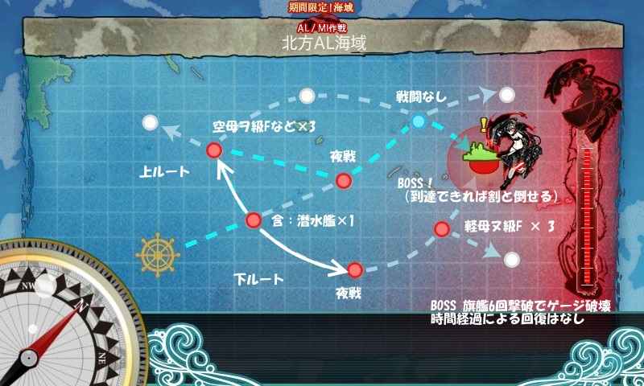
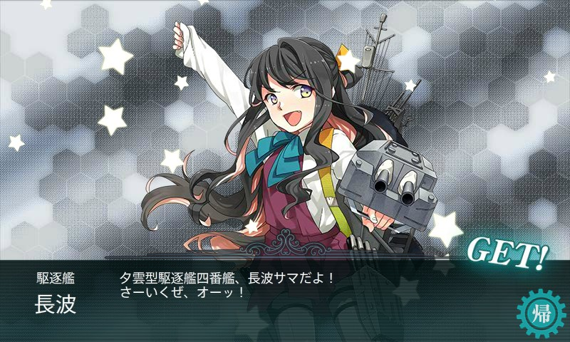

艦これ：E-1 北方AL海域へ進出せよ！
執筆日時：
海域オーバービュー

大雑把に、上ルートか下ルートにわけられそう。
最初、ちょっと史実準拠風味に「軽空×2、軽巡×2（雷巡×1含む）、駆逐×2」にしてみたけれど、どうも BOSS までたどり着けぬ（すべて下ルート）。この編成だと第1戦目で砲撃が潜水艦に吸われるのもあまりよくない感じ。
そこで「軽空×2、重巡×2、駆逐×2」にしてみたところ、全員中破になりつつも、上ルートで BOSS に到達。BOSS は割と簡単に撃破できた。
次にためしに「重巡×4、軽空×2」という構成にしてみた。これは下ルート固定らしい。軽空母にダメコンを載せたところ、BOSS 到達率がかなり上がったので、これで行くことにした。
結果
| 前衛哨戒艦隊 | 北方水上打撃部隊B群 | 対潜掃討部隊 | 北方方面主力艦隊 | |
| 1 | A | B | C | |
| 2 | B | B | S | |
| 3 | B | B | ||
| 4 | B | B（北方任務部隊） | B（北方水雷戦隊） | A |
| 5 | B | A | B | |
| 6 | A | A | B | S |
| 7 | A | B | ||
| 8 | B | A | A | |
| 9 | A | B | A | |
| 10 | B | A | A | S |
| 11 | A | A | S | S |
| 12 | A | |||
| 13 | C | |||
| 14 | A | B | B | A（BOSS打ち漏らし） |
| 15 | A | A | B | A（BOSS打ち漏らし） |
| 16 | B | A | B | S |
| 17 | A | B | ||
| 18 | A | A | ||
| 19 | A | |||
| 20 | A | A | S | |
| 21 | A | B | ||
| 22 | A | A | S | A |
1戦目：潜水艦の雷撃が当たらないように祈る 2戦目：戦艦の夜戦砲撃が当たらないように祈る 2戦目：制空権とってあとは祈る
— だるやなぎ に天使が舞い降りた！ (@daruyanagi) 2014年8月9日
三戦目で制空権をとってみるかと思っていろいろ試してみたけど、軽空母2隻で制空権まで狙うと打撃力の低下が著しかったので、航空優勢で十分だと思った。
まぁ、それはともかく、途中での事故が多いわ、多いわ。だんだん撤退するのがかなりめんどくさくなったので、ダメコン頼りに大破のまま進んだら、そのままダメコンを消費せずに BOSS が倒せてしまった（9戦目、10戦目）。それに味をしめて、二匹目の泥鰌を狙って大破進軍を繰り返したところ……

また隼鷹死んだ
— だるやなぎ に天使が舞い降りた！ (@daruyanagi) 2014年8月9日
ダメコンを4つも失う事態に（隼鷹×3、龍驤×1）。
最初は「隼鷹は二度死ぬ」ってブログのタイトルにつけるか、なんて思ってたけど、さすがにこれはあかん。
幸い BOSS へのルートは固定できるし、時間経過によるゲージ回復もない。家事をしながら15分に1回、ダメコンがあってもBOSS 戦以外は大破撤退というのんびりした方針で最後の方は臨んだ。
E1: ①22回出撃 → ②18回 → ③13回 → ④8回（撃破6回） 最初の5回ぐらい編成を試行錯誤していたとはいえ、ちょっと無駄が多かった
— だるやなぎ に天使が舞い降りた！ (@daruyanagi) 2014年8月9日
WebMatrix で遊んだり、お皿洗いしながらやっていたので、初戦で夜戦に突入してしまったりなどなど、いろいろ誤操作もやらかし、効率よくクリアできたとはとても言い難い。たぶん、情報さえあれば半分程度に出撃回数は減らせると思う。
ドロップ艦娘
| S | A | B | |
| 前衛哨戒艦隊 | 如月、加古、青葉、天龍 | ||
| 北方水上打撃部隊B群 | 睦月、川内、名取 | 皐月、望月 | |
| 対潜掃討部隊 | 足柄、谷風 | 木曾 | |
| 北方方面主力艦隊 | 阿賀野、山城、長波、龍驤 | 筑摩、長良、龍驤、鳳翔 |

長波きたああああああああああああああああああああ！
— だるやなぎ に天使が舞い降りた！ (@daruyanagi) 2014年8月9日
もってなかった（掘るのめんどくさかった）のでうれしい！
任務報酬
やったやでー pic.twitter.com/LTPmkleNmR
— だるやなぎ に天使が舞い降りた！ (@daruyanagi) 2014年8月9日
めっさかわいい！ これで「村雨」「夕立」「五月雨」で第2駆逐隊が組める！
第2駆逐隊はこの本の前半に出てくる。